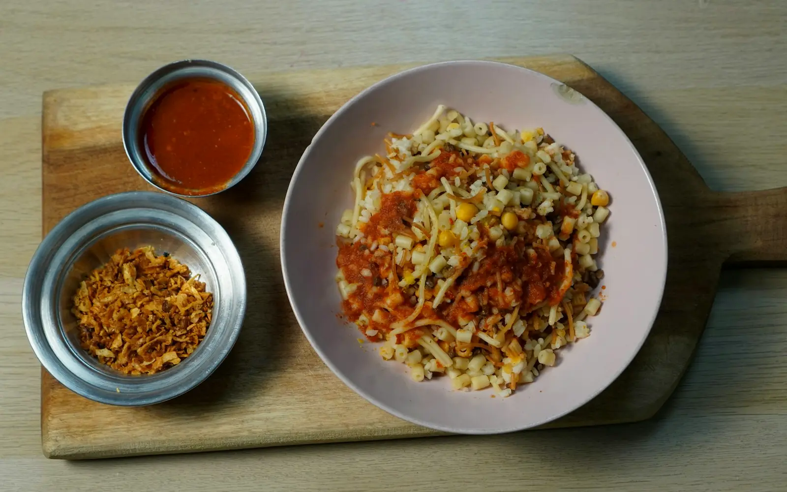
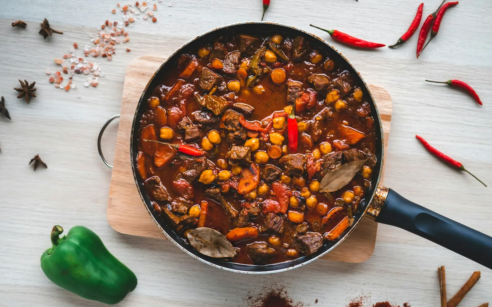
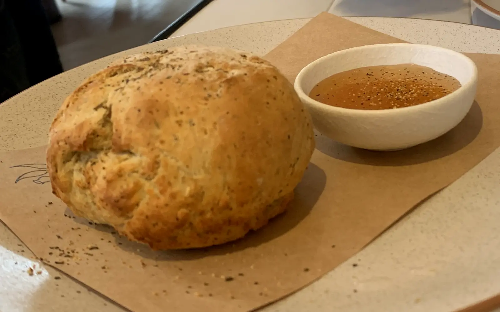

Explore by continent
Where shall we eat?
Pick a continent and see every vegetarian dish from it.
AsiaSaffron, smoke and street stalls124 recipesEuropeTomatoes, herbs and slow lunches20 recipes North AmericaTacos, corn and maple mornings20 recipes
North AmericaTacos, corn and maple mornings20 recipes

AfricaClay pots and bold red spice20 recipesNorth AmericaTacos, corn and maple mornings20 recipes
South AmericaCorn, beans and Andean grains20 recipes
Australia & IslandsSunlit coasts, tropical roots and island fire20 recipes